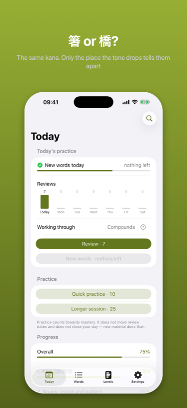
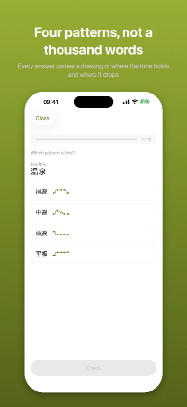
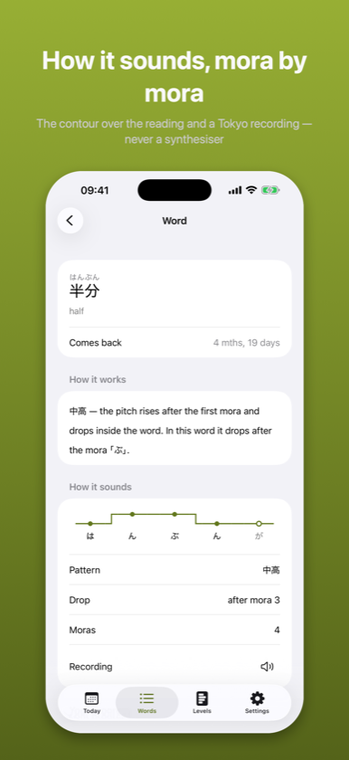

Pronunciation and listening
Coming to the App Store
Waiting for Apple review. This page describes the version submitted.
Japanese hides a layer the kana does not write. 箸 and 橋 are spelled the same and are not the same word – and the difference is a rule you learn, not a list you memorize.



Kifuku teaches Japanese pitch accent – the layer of the language that kana does not write down.
箸 and 橋 are both はし. 雨 and 飴 are both あめ. Nothing on the page tells them apart; only where the tone drops does. Most courses mention this once and move on, because it looks like a list of thousands of facts to memorize. It is not. It is mostly rules, and this app is built to show you which ones.
Rules – where the tone drops in a word you have never seen. This one is measured only on words that are not on your review schedule, so it answers a question your memory cannot fake.
Patterns – which of the four patterns a word has: 平板, 頭高, 中高, 尾高.
Inflection – what happens to the accent when the word changes: 〜ます, 〜た, 〜ない, 〜て.
Ear – where the drop falls in a recording.
You can know the accent of every word on your list and still not predict a new one. An app that averages those four numbers into one has no way to show you that. This one shows it.
A rule without a number teaches false certainty. "Verbs are accented on the second-to-last mora" is useless until you know how often – so every rule here shows its coverage, counted on a 340,000-entry dictionary and visible to you, not hidden in the code.
The system voice does not promise to read 箸 as 頭高 and 橋 as 尾高, and that difference is the whole app. So there is no text-to-speech here at all – only recordings by a Tokyo speaker. Where there is no recording, the button says so instead of playing something we cannot vouch for. This is the one place where silence is more honest than sound.
Accent does not belong to an exam level. 箸 and 橋 come up on the first day and are in no N5 list.
Everything here is the Tokyo standard – the accent of dictionaries, broadcasting and textbooks. It is one standard among several, not "Japanese". In Kansai many of these words carry a different accent, and that is not a mistake in either direction. The app says so on its own screens, not in the fine print.
Words come back on a schedule, because they are facts and facts fade. Rules do not come back that way – a rule is not forgotten, it is left unused, and that shows up in your mistakes rather than on a calendar. The two are scheduled differently on purpose.
Everything runs on the device. Nothing is uploaded, nothing is tracked, and the app works with the network off. Data Not Collected is not a promise here, it is a description.
Levels 1 and 2 are free in full – including the first predictive rule, so you see both kinds of material before deciding. One purchase unlocks levels 3 to 5. No subscription.
Sources are credited in the app: accent data from UniDic (NINJAL), recordings from the Tofugu and WaniKani pronunciation set.
The description above is the same text that stands on the App Store product page – it comes from the same file.